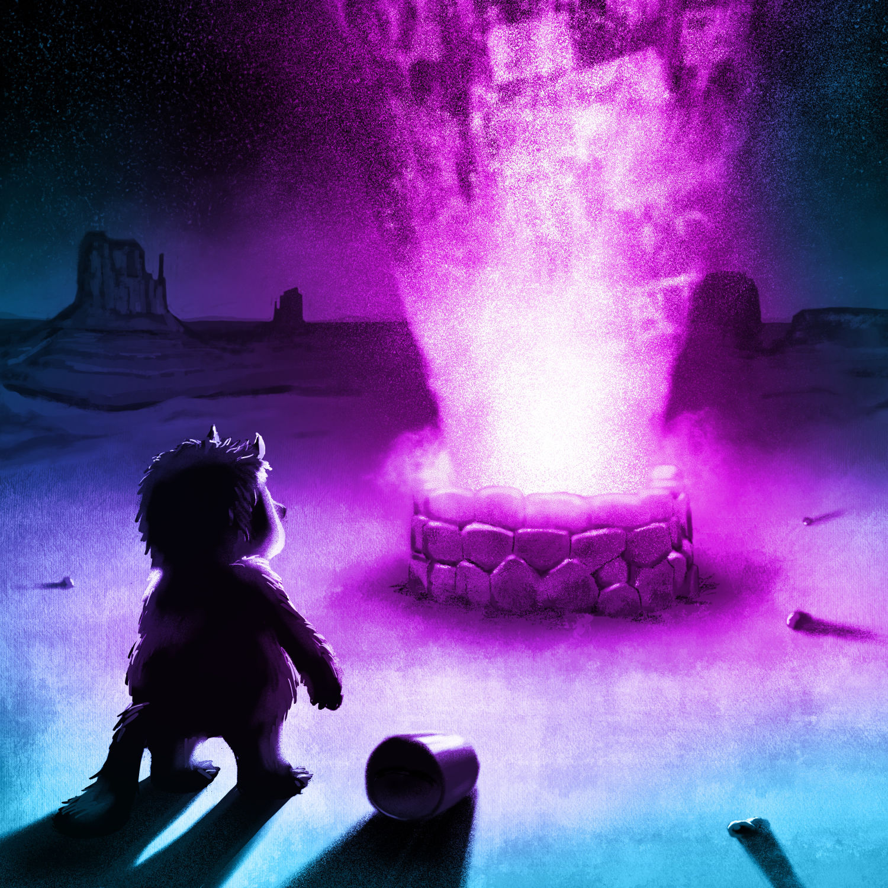

“This isn't golf, this is a blisterin' assault,
Those are your wounds, this is the salt”
Not just the history to reveal,
but the hoax it keeps concealed.
The Museum of American Greatness
Welcome to the entrance to the gate.
Everything that came before’s too late.
A change has occurred, but it’s not new.
You don’t know what you once knew.
Below the neck scrotum was a flower,
so hungry it’s the concept of devour.
Comes up through the neck from below—
the gut’s the real brain, the real show.
The scrotum withered off, like designed.
Everyone that loves him stays resigned.
They all knew this change would come.
You’re not from where they’re from.
~
Twenty old conservative white guys watch.
Like the late Roman Senate: rotten, too wise.
Balled wires unfurl from the flower’s bubbling rot,
sniffing eagerly for scared power, that orphaned tot.
“Teach American Exceptionalism”
America’s got a death cult not alive enough to know it.
Dissonance so exceptional, it must be taught—rises
like vapour from water where an ice sheet was:
a mask for failure only visible to the wearer.
Avoidable death, new great altar to life. Rot
with the beauty of a field of wild flowers—
if you are willing enough to be exceptional.
“Don’t let the virus domina—” No, you must fear
with him now: a life not dominated completely.
No longer your co-producer, freer of your fucks.
Now, together, free all fucks or fail most freely.
54 million American cowards fill a stadium, jostling,
shaking rolled-up ballots, now stabbing their eyes bluntly
with the ballots. It hurts, causes minor damage and
some blindness. Constant as a comment thread. Thud.
~
prez salt-in-wound is damn near mined dry.
Fed what fear can, given all. Agent of death,
aided and abetted by the party of life. Cornered
animal—a dangerous thing. Might kill then die.
The Last Hoax
Gentle Monster mourns the little pile of salt
that was once the President of the United States.
Sweeps it into an open palm carefully, adds it
to the slow-cooking stew of everything mourned.
Gentle Monster, born this morning mushroom-like
from a contradiction device, like a soothing explosion,
fueled by bullshit, our recklessness, all negligence,
“this pending cosmic elegy.”
All that filled the streets
with raging refusal Gentle Monster gathers,
adds to the simmering stew, sadness sealed in pride,
opening in low, constant heat on the daylong walk
to a well of common language.
~
Gentle Monster arrives to that well and sets the pot
aside to cool. Looks to the setting sun in praise.
When dark, upturns the pot above the now-trembling well
All empties upward and ascends. Gentle Monster walks away,
most carefreely. Cellphone video of it all streams widely.
The court jesters of the king clown argue
what Gentle Monster did was a hoax.
Was. Love only hoaxes a too human world.
Gently, monstrously, the very best we can do.
END
Note: A hoax exists not in the creation,
but in the reception. The meaning of a hoax
is reliant on how its intent and its reception
line up. You must interpret your way into being
the butt of the joke, or not. Either way, it’s on you.